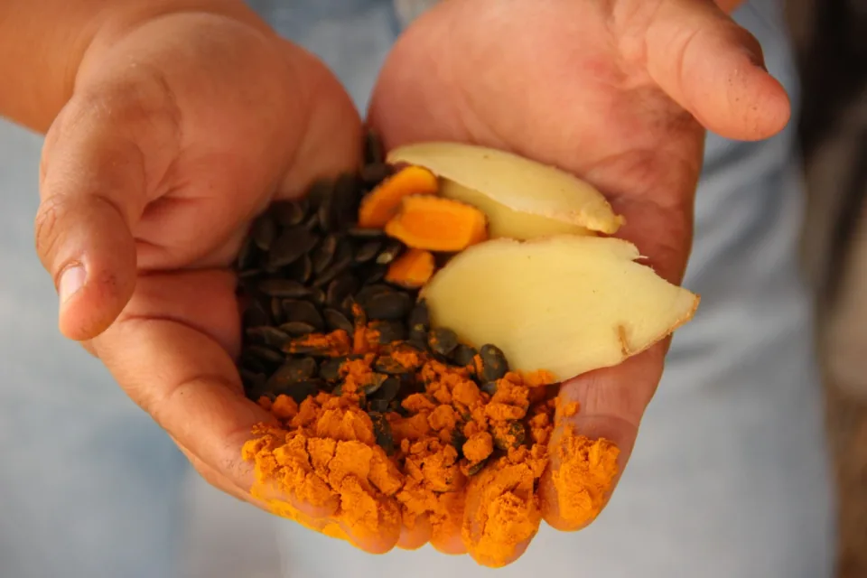

מדריך התבלינים של ענבל לשוק לוינסקי
מאת ענבל הנסב ·
בפעם הבאה שאתם נכנסים לחנות תבלינים בשוק לוינסקי, התחילו ממה שתרצו לבשל השבוע. אם אתם מתכננים מרק עדשים, למשל, כמון יכול להספיק. אם אתם מתכננים אורז מתובל, בקשו להריח תרמילי הל. המדריך הזה יעזור לכם לבחור תבלין שתשתמשו בו גם אחרי הביקור בשוק.

איך לתכנן ביקור בחנויות התבלינים
פתחו את מפת שוק לוינסקי בתל אביב ובחרו כמה חנויות לאורך רחוב לוינסקי והרחובות הסמוכים. אם אתם מגיעים בשביל חנות מסוימת, בדקו מראש את שעות הפתיחה שלה. כדאי להשאיר זמן להיכנס, לשאול ולהשוות בין תבלין שלם לטחון לפני שקונים.
שלוש שאלות שכדאי לשאול בחנות
- מה בדיוק יש כאן? בקשו את שם התבלין. בתערובת בקשו את רשימת המרכיבים ושאלו אם כבר יש בה מלח או חריפות.
- איך הייתם משתמשים בו במנה שאני מכין או מכינה? ספרו מה אתם מבשלים. אפשר לשאול מתי כדאי להוסיף את התבלין ואילו מרכיבים מתאימים לו.
- אפשר לקחת כמות קטנה? אם זה טעם חדש לכם, קנו כמות שתספיק לכמה ארוחות ובדקו בבית אם תרצו לחזור אליו.
אם יש צורך להתאים את הקנייה לאלרגיה או לכשרות, בדקו את האריזה ושאלו בחנות גם על מגע עם מרכיבים אחרים או על תעודת כשרות, לפי הצורך.
ארבעה תבלינים שכדאי להכיר
- כמון לעדשים וירקות
- בקשו להשוות בין זרעי כמון לכמון טחון. בבית נסו מעט כמון במרק עדשים או על כרובית לפני הצלייה.
- הל ירוק לאורז
- הריחו את הזרעים מתוך תרמיל אחד. אפשר למעוך קלות תרמיל, להוסיף אותו לאורז בזמן הבישול ולהוציא לפני ההגשה.
- קינמון לתפוחים או לדייסה
- בקשו לראות את המקלות ולברר איזה סוג טחנו לאבקה. אפשר להיעזר במדריך לקינמון ציילון וקסיה לפני הקנייה.
- לימון פרסי מיובש לתבשיל
- חפשו אותו אם אתם אוהבים חמיצות עמוקה בתבשילי קטניות. שאלו אם הוא שלם או טחון ואיך המוכרים היו משלבים אותו בסיר.
איך לשמור על מה שקניתם
העבירו את התבלינים לכלי יבש וסגור וסמנו מה יש בו ומתי קניתם אותו. שמרו בארון מוצל והרחק מהאדים של הכיריים. כשתנסו תבלין חדש, התחילו במעט, טעמו ואז החליטו אם להוסיף.